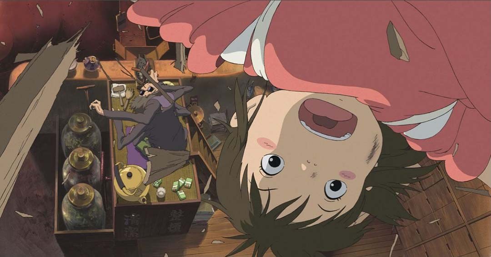
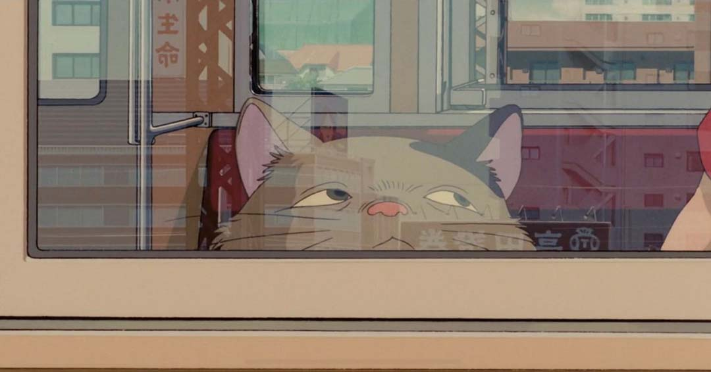
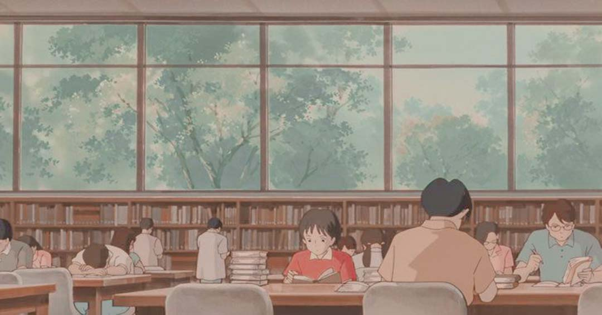
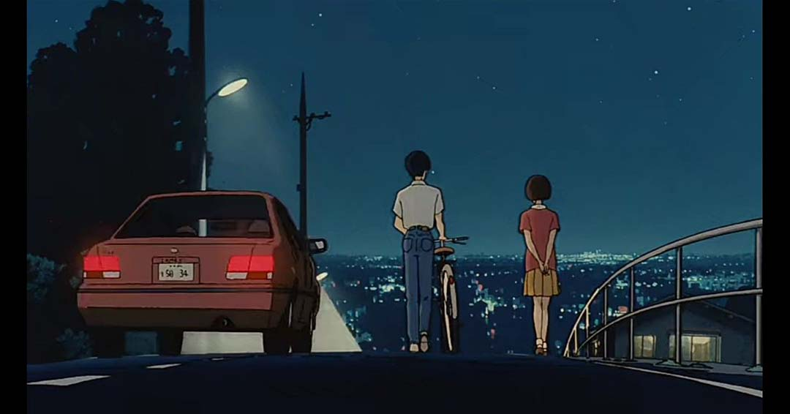

Inicio
Studio Ghibli es un estudio japonés de animación, considerado por la crítica especializada y muchos cinéfilos como uno de los mejores estudios de animación del mundo en la actualidad.
Fue fundado en 1985 por Hayao Miyazaki, Isao Takahata y Toshio Suzuki y es considerado uno de los mejores estudios de animación en el mundo. Ha producido una gran cantidad de largometrajes animados aclamados por la crítica que han obtenido numerosos premios e incluso algunas de sus entregas han sido nominadas a los Óscars.
Películas

Desde su fundación, Studio Ghibli ha producido un total de 22 películas, cada una con su propia historia y estilo visual. Entre ellas se encuentran clásicos como Mi Vecino Totoro, El Castillo en el Cielo, La Princesa Mononoke y muchas más. Sin embargo, la película más famosa del estudio es El Viaje de Chihiro, la cual ganó el premio a la Mejor Película de Animación en los Premios de la Academia en 2008.
- Nausicaä del Valle del Viento (1984)
- El Castillo en el cielo (1986)
- La Tumba de las Luciérnagas (1988)
- Mi vecino Totoro (1988)
- Nicky, la aprendiz de bruja (1989)
- Recuerdos del ayer (1991)
- Porco Rosso (1992)
- Puedo escuchar el mar (1993)
- Pompoko (1994)
- Susurros del Corazón (1995)
- La princesa Mononoke (1997)
- Mis vecinos Los Yamada (1999)
- El viaje de Chihiro (2001)
- Haru en el reino de los gatos (2002)
- El Castillo Ambulante (2004)
- Cuentos de Terramar (2006)
- Ponyo en el acantilado (2008)
- Arrietty y el Mundo de los Dim/inutos (2010)
- La colina de las amapolas (2011)
- El viento se levanta (2013)
- El cuento de la princesa Kaguya (2013)
- El recuerdo de Marnie (2014)
- Earwig y la bruja (2020)
- ¿Cómo vives?
Arte
Studio Ghibli se caracteriza por sus hermosas e imaginativas películas animadas, así como por su estilo visual único, sobre todo que tenemos en mente personajes de mujeres que son heroínas, el pasto y cielo hermoso, así como sus personajes imaginarios. El estudio es conocido por crear fondos exuberantes y detallados.
|  |
|---|
|  |
|  |
 |
|  |